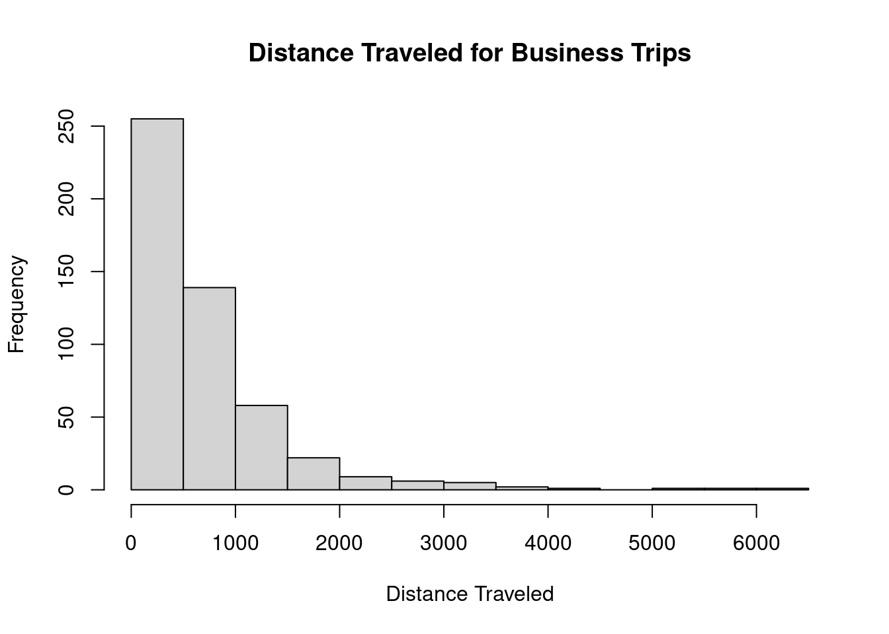

# Check for missing data missing_vars <-(client_data)if (length(missing_vars) <0) {stop(paste("Null", paste(missing_vars, collapse =", ")))}# Split the data into training and testing sets train_index <-1:500client_data_train <- client_data[train_index, ]client_data_test <- client_data[-train_index, ]
# Group training data by Visit PurposeBusinessTrips <- client_data_train %>%group_by(visitPurpose ="Business")summary(BusinessTrips)
satCleanRoom satCleanBath satCleanCommon satFrontStaff
Min. :1.000 Min. :2.000 Min. :1.000 Min. :1.000
1st Qu.:3.000 1st Qu.:4.000 1st Qu.:3.000 1st Qu.:3.000
Median :4.000 Median :4.000 Median :4.000 Median :4.000
Mean :4.036 Mean :4.178 Mean :3.876 Mean :3.912
3rd Qu.:5.000 3rd Qu.:5.000 3rd Qu.:5.000 3rd Qu.:5.000
Max. :7.000 Max. :7.000 Max. :6.000 Max. :7.000
satDiningStaff satHouseStaff satValetStaff satPerks
Min. :1.000 Min. :1.000 Min. :1.000 Min. :1.000
1st Qu.:3.000 1st Qu.:4.000 1st Qu.:3.000 1st Qu.:4.000
Median :4.000 Median :4.000 Median :4.000 Median :4.000
Mean :3.686 Mean :4.344 Mean :3.698 Mean :4.268
3rd Qu.:4.000 3rd Qu.:5.000 3rd Qu.:4.000 3rd Qu.:5.000
Max. :7.000 Max. :7.000 Max. :7.000 Max. :7.000
satRoomPrice satDiningPrice satWifiPrice satParkingPrice satCity
Min. :1.000 Min. :1.0 Min. :1.000 Min. :1.000 Min. :1.000
1st Qu.:3.000 1st Qu.:3.0 1st Qu.:3.000 1st Qu.:4.000 1st Qu.:3.000
Median :4.000 Median :4.0 Median :4.000 Median :4.000 Median :4.000
Mean :3.802 Mean :3.7 Mean :3.962 Mean :4.276 Mean :3.932
3rd Qu.:5.000 3rd Qu.:4.0 3rd Qu.:5.000 3rd Qu.:5.000 3rd Qu.:5.000
Max. :7.000 Max. :7.0 Max. :7.000 Max. :7.000 Max. :7.000
satCloseTransp satCloseEvents satPoints satRecognition satOverall
Min. :1.00 Min. :1.000 Min. :1.000 Min. :1.00 Min. :1.000
1st Qu.:3.00 1st Qu.:4.000 1st Qu.:3.000 1st Qu.:3.00 1st Qu.:3.000
Median :4.00 Median :4.000 Median :4.000 Median :4.00 Median :4.000
Mean :4.09 Mean :4.244 Mean :4.036 Mean :3.95 Mean :3.976
3rd Qu.:5.00 3rd Qu.:5.000 3rd Qu.:5.000 3rd Qu.:5.00 3rd Qu.:5.000
Max. :7.00 Max. :7.000 Max. :7.000 Max. :7.00 Max. :7.000
distanceTraveled nightsStayed visitPurpose avgRoomSpendPerNight
Min. : 24.0 Min. : 1.000 Length:500 Min. :119.0
1st Qu.: 252.0 1st Qu.: 2.000 Class :character 1st Qu.:145.2
Median : 485.5 Median : 3.000 Mode :character Median :152.3
Mean : 714.2 Mean : 3.724 Mean :153.7
3rd Qu.: 939.5 3rd Qu.: 5.000 3rd Qu.:160.7
Max. :6422.0 Max. :15.000 Max. :199.0
avgFoodSpendPerNight avgWifiSpendPerNight eliteStatus
Min. : 0.00 Min. : 0.000 Length:500
1st Qu.: 10.00 1st Qu.: 4.749 Class :character
Median : 16.38 Median : 7.450 Mode :character
Mean : 22.78 Mean : 7.213
3rd Qu.: 31.68 3rd Qu.: 9.950
Max. :116.80 Max. :14.950
print(min)
function (..., na.rm = FALSE) .Primitive("min")
print(max)
function (..., na.rm = FALSE) .Primitive("max")
# Histogram using base R plottinghist(BusinessTrips$distanceTraveled, main ="Distance Traveled for Business Trips", xlab ="Distance Traveled")

# Load ggplot2 package if not already loaded# install.packages("ggplot2")library(ggplot2)# Histogram using ggplot2ggplot(BusinessTrips, aes(x = distanceTraveled)) +geom_histogram(binwidth =100, fill ="skyblue", color ="black") +labs(title ="Distance Traveled for Business Trips", x ="Distance Traveled", y ="Frequency")